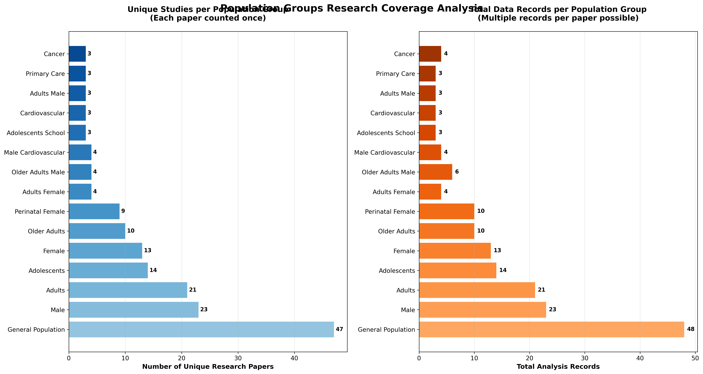
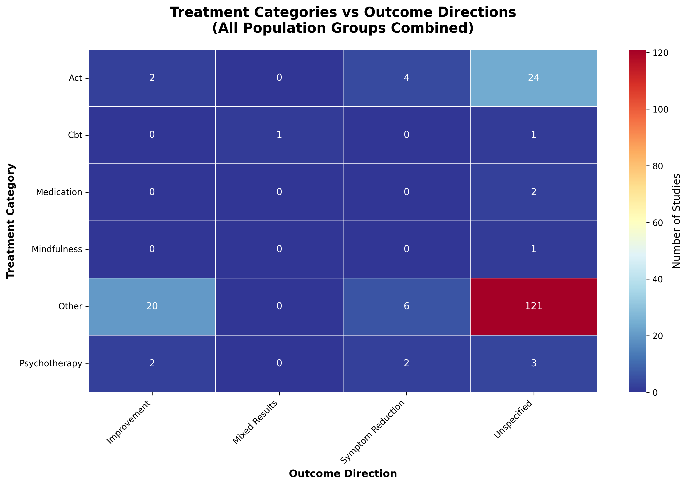
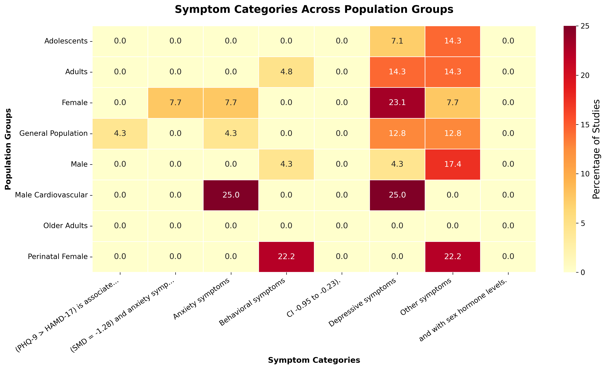

üéØ Demo Overview
This system analyzes mental health literature using population stratification to discover treatment patterns across different demographic groups. The analysis identified 30 distinct population strata from 215 research studies, revealing significant differences in risk factors, treatments, and outcomes across groups.
üìà Generated Visualizations
Population Strata Overview
Shows study distribution across population groups

Top Risk Factors by Group
Risk factor patterns for major population strata

Treatment Outcomes Heatmap
Treatment effectiveness patterns

Symptoms Comparison
Symptom prevalence across different groups

Interactive Population → Treatment → Outcome Flow
Interactive Sankey diagram showing treatment pathways
üéØ Demo Commands
To reproduce this analysis:
# Complete pipeline
python3 src/cli.py pipeline data/step3_extracted.csv
# Generate user-friendly summary
python3 src/cli.py summary outputs/tables/
# Create visualizations
python3 src/cli.py visualize outputs/tables/ outputs/tables/normalized_data.csv outputs/plots/
# Generate LLM insights (with API keys)
python3 src/cli.py narratives outputs/tables/ outputs/report/